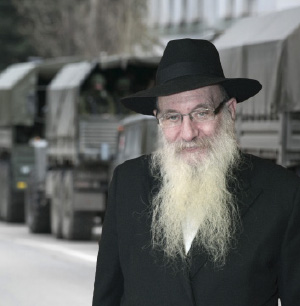

In the Eye of the Political Storm in Crimea
Upon the Russian invasion of Crimea, we wanted to speak with the shliach to Simferopol, R’ Lipszyc, but it was hard to reach him. It turned out, he had been in the US fundraising and was on his way back to Crimea but was unable to get there once he reached Moscow. * His wife, who was left in the city on her own, in dangerous proximity to the Russian armed forces, boarded a train at the last minute. * They both eventually arrived in the US where they are fundraising for the great expenses before Pesach and from where they are leading their community from a distance. * Shortly after they landed, we sat together for an interview and heard firsthand about the dramatic events.
By Avrohom Rainitz

The Chabad house was empty during those dramatic moments, not only because of the early hour but because the shliach, R’ Yitzchak Meir Lipszyc was on a flight from New York to Moscow from where he was supposed to take a direct flight to Simferopol. His wife Leah was in their home a few streets away from the Chabad house.
In an interview with Beis Moshiach, they described recent events.
30,000 DEMONSTRATORS NEAR THE CHABAD HOUSE
Mrs. Leah Lipszyc:
In recent weeks, since the intensification of the uprising in Kiev, tensions began rising between the Russian and Ukrainian populations. After Victor Yanukovich fled the Ukraine, he was welcomed by Russia. Russia announced that it would continue to recognize him as the legitimate president of the Ukraine and would defend Russia’s interests in the Ukraine. Russian residents began organizing huge demonstrations, calling on the transfer of Crimea to Russian authority.
The main demonstration took place opposite the Parliament building in our city of Simferopol which is right near the Chabad house with just a small street and woods separating the two.
From the windows of the Chabad house I could see the 30,000 demonstrators surrounding the Parliament building which is called the “White House.” In the center of the building, which is built in the shape of a pentagon, there is a small park. Several thousand Ukrainian demonstrators gathered there, calling for the continuation of Ukrainian rule. Between the two groups of demonstrators were policemen. At a certain point, a confrontation developed between the two groups of demonstrators and they began throwing stones at one another. I saw demonstrators rip rocks out of the pavement and hurl them.
The Chabad house has a large sign which proclaims it is a Jewish center. I was afraid that anti-Semitic demonstrators would take advantage of the chaos and attack the Chabad house. I consulted with one of our mekuravim and he reassured me, saying that if the situation deteriorated he would take down the sign to lessen the chances of an attack.
Since all the reports spoke about the situation deteriorating, I was afraid that the banks would stop operating. I rushed to the bank in the morning in order to withdraw the small amount of money we had in the account. As I approached the bank, my heart sank when I saw the long line. Since I’ve arrived in Simferopol twenty years ago, I never saw a line like that at the entrance to the bank. It seems everyone realized that it’s better to have your money with you than to rely on the bank. Fortunately, we have a good relationship with the bank manager and since he understood that I needed the money to continue our work on behalf of the Jewish community, he told me to go up to the next floor where he gave me all the money in the account. The next day, all the banks were closed.
That night, there was another demonstration in the woods between the Chabad house and the Parliament building and I was becoming more and more worried. Throughout those tense hours, my husband was fundraising in America. Before Pesach, we distribute food packages and shmura matza to thousands of Jews and we need a lot of money for this which my husband raises. I called and updated him and after consulting with friends and a mashpia, he decided to return to his place of shlichus as soon as possible. He told me he was taking the first available flight to Moscow, from where he would fly to Simferopol.
REMOVING SIFREI TORAH
The next day, at four in the morning, the next act in the drama unfolded. Several buses stopped near the Parliament and dozens of armed soldiers emerged with rifles and automatic weapons, wearing combat gear. They quickly took control of the building, planted explosive devices near the building and within a short time had taken control over all the government offices.
Then they raised a Russian flag over the Parliament building. The armed men wore masks and helmets and had no ID tags. They refused to say who they represented but the Russian flag they raised made it clear they were soldiers in the Russian army.
I heard about this in the early morning and the first thing I did was to call the Chabad house driver and ask him to rush over to the Chabad house and take out the Sifrei Torah. He informed me that the police closed the entire center of the city including the street where the Chabad house is located.
I told him that we must get the Sifrei Torah out and bring them to a safe place. The Chabad house is in the eye of the storm and it was too dangerous to leave the Sifrei Torah and other items of k’dusha there. In addition, due to the shutdown – and we had no idea how long it would last – we were unlikely to be able to hold minyanim in the Chabad house shul anyway. So I told him that we must move the Sifrei Torah to our house where the minyan would take place.
The driver said he was ready to take a chance and drive in the direction of the center of the city. Right after concluding that phone call, I sat down to write to the Rebbe and I asked for a bracha that we be able to remove the Sifrei Torah without incident. A few minutes later, the driver called and said that when he reached the police barricade in the center of the city, he told the policemen that he was on his way to the synagogue to remove the Torah scrolls. To his amazement, the policemen told him to continue driving and allowed him to drive to the shul.
After loading the Sifrei Torah into his car, along with other holy items, he drove to our house. On the way back too, the police made no problems; this was astonishing. People in the center of the city were not allowed out of their houses, even on foot, and here was a car with Sifrei Torah that the police allowed in and out.
Since there used to be a minyan in our house, we still had a closet that served as the Aron Kodesh. I cleaned it well and we put the Sifrei Torah in it. I put the rest of the s’farim and holy items in the living room, which in the meantime had turned into the Jewish shul of Simferopol.
THE AMERICANS WERE NOT INFORMED
Rabbi Yitzchak Meir Lipszyc:
While my wife was bravely dealing with the dramatic events that were unfolding, I arrived in Moscow. The next flight to Simferopol was leaving at nine at night and I had nine hours to wait. In the meantime, I called my wife and heard how Russian soldiers had taken control of all the government buildings in Crimea, had surrounded Simferopol with tanks, and had closed the highways connecting us with the Ukraine. The airports and seaports were also closed.
I heard all this from my wife who was on the scene. The international media did not know and did not realize that the Russians had taken over Crimea. As an American citizen, I called the situation room at the American consulate in Kiev and even there, they were unaware about the situation in Simferopol. They repeatedly said that according to the information they had, the airport was open and there was no problem with flights to Simferopol.
The airline also did not know just what was going on. They told me that the flight was delayed and would leave at four in the morning. When I asked them why it was delayed, they said it was because the plane had to return from Simferopol at six in the morning and since they didn’t want the plane to be on the ground more than two hours, they had to adjust their flight schedules. I told them this made no sense and according to my information, the airport was closed and they couldn’t fly at all. They refused to believe that.
RESCUE FROM THE BESIEGED CITY
Mrs. Lipszyc:
While my husband was stuck in the airport in Moscow, without being able to leave the airport since as an American citizen he needed a visa to enter Russia, I received many phone calls from shluchim asking how they could be of help. Friends from around the world, who received updates in real time from me about the Russian takeover, advised me to leave immediately. Especially when I heard that my husband could not return and if I would not leave right away I might be stuck alone for a long time to come, and who knew what would happen next?
Among the people who called were representatives from the Jewish Agency who said they were ready to provide humanitarian aid to the Jews in the area. I called the person in charge of the Agency in our area and gave him a list of items that the Jewish community needed immediately, in the hopes that perhaps they would help someone. His answer was that he would bring it up in a meeting that would take place the following week in Eretz Yisroel, and then he would report to me about how they could help. I was shocked.
I told him: You know that the situation here is explosive and this help is needed immediately. Tomorrow might be too late, and you are pushing me off for a week?!
He apologized and said that everything had to go according to protocol and after a meeting, blah, blah, blah. I discovered, once again, that aside from the Rebbe’s shluchim, nobody is geared for providing assistance in the here and now.
The people in the community with whom I spoke were not as worried about themselves as they were worried about us. They pointed out that once the US had gotten involved in the crisis, there were very strong anti-American sentiments on the part of the Russian population and since my husband and I are American, we were in greater danger than the local members of the community. They said they would continue the Chabad work in the city according to our instructions so we could leave with peace of mind. One of the mekuravos wrote me an email that said: We, the members of the community, ask you to leave because you are in real danger here. We need you healthy and well!
R’ Yossi Wolf, the shliach in Charson, called and asked me to come to him. I called our driver but he could not drive to Charson because he was afraid he would not be able to return. R’ Wolf got a driver from Charson who was willing to drive to Simferopol but then I heard that spikes had been placed on the highways so that traveling by car was not possible.
In the meantime, I got reports that tanks had entered the city and were near the airport. Now it was clearly impossible to leave via the airport. I was in touch with senior government officials who tried to help but were unsuccessful. At a certain point, my daughter called me and asked whether she could help us get out. I told her half-jokingly that the only way to get me out now was to rent a helicopter and land it in the schoolyard and fly me out of Crimea.
Thursday night, after a nerve-wracking day, I got a phone call from friends in Donetsk, Yaakov and Liza Geisinovitz who told me that they were able to buy the last train tickets for me, on the railroad company’s website. The train left Simferopol for Donetsk in half an hour. They gave me the confirmation number of the purchase and I began a race against the clock. I had ten to fifteen minutes to pack my most important things. Some of the important things I left there, but I took the most important things with me on the train and finally left Crimea.
I updated my husband who was still stuck in the airport in Moscow. He changed his ticket to Donetsk. Many of my children and grandchildren were up all night until they heard that my husband and I had arrived in Donetsk.
LONG DISTANCE LEADERSHIP
R’ Lipszyc:
On Shabbos P’kudei we were hosted by the Geisinovitz’s and we thanked Hashem for all the good that He did for us. On Motzaei Shabbos I farbrenged with the community in nearby Makeyevka and on Sunday we left on a flight to New York. We made that decision when we realized that we would have to run the community in Simferopol long distance and it made no difference whether we were in Donetsk or New York. In New York, however, we can raise money which we need now more than ever. This is because food prices have risen and in certain places have even doubled. We also have to hire a security company to protect the shul, school, and our house. It costs a lot of money.
We are in touch with members of the community, with the secretary of the Chabad house, and the other employees. Between trips we managed to get a girl out of Simferopol who was in the final stages of conversion to Judaism. After Shabbos, we arranged her trip to the Ukraine and made sure she would meet with the special beis din for conversions. Boruch Hashem, she completed her conversion.
The davening takes place in our house. We give the regular shiurim via Skype, thus using the wonders of technology for holy purposes.
The bottom line is that Chabad in the Crimea has not stopped operating even for a minute. We continue our shlichus and hope to return there very soon, probably after Pesach. For those who want to know how they can help us, I will give you three ways. First, say T’hillim on behalf of the Jews of the Ukraine. Second, increase in your mitzvos or in hiddur mitzva in our merit. Third, make a donation so we can keep up the security and maintain and add to our spiritual activities. Donations can be made through our website: chabadcrimea.org by clicking on Donate. Our email is [email protected]
SOMEONE IS THINKING ABOUT HIM
Throughout the interview, R’ Lipszyc looked especially relaxed. He is confident in the Rebbe who certainly thinks about him and guides him. He has experience with this …
Many years ago, when he was on shlichus in Birmingham, Alabama, he went through a miserable time because the local Jewish establishment tried to undermine his position in the community. During those two hard years, his spiritual accomplishments were not that great and in addition to all the tzaros, his financial situation was dire. He wrote to the Rebbe a number of times with reports and requests for guidance and blessing, but received no reply.
One day, on his way home from another difficult meeting with an influential person in the community, he was thinking about how he had not succeeded in “conquering the city” like other shluchim. He was also bothered by the fact that he hadn’t received a letter from the Rebbe in a long time. He figured he must have done something serious, something so serious that the Rebbe cut off contact with him. All the way home he dwelled on these negative thoughts.
When he arrived home, his ten year old daughter told him he had missed an important call from R’ Moshe Kotlarsky. R’ Lipszyc found this most curious because in the previous two years he had not heard from him a single time. So he called him back.
“Hello, Itche Meir, what’s doing with you?” asked R’ Kotlarsky. R’ Lipszyc blurted out, “In all honesty, the situation is terrible.” R’ Kotlarsky promised to speak to R’ Chadakov.
Before he hung up, R’ Lipszyc asked, “I’m curious as to why you called today, of all days.”
R’ Kotlarsky said, “I myself do not know. R’ Chadakov called my office and told me to call Lipszyc in Birmingham immediately. ‘Find out how he is doing; He needs to know that there is someone here who is thinking about him.’”
Beis Moshiach (staff). "In the Eye of the Political Storm in Crimea." Beis Moshiach, no. 919 (March 12, 2014).